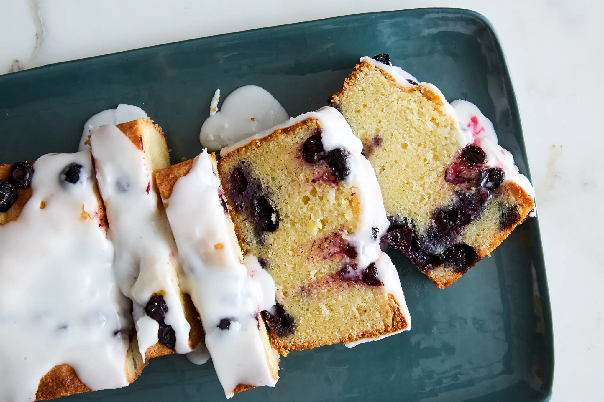

Blueberry, Almond and Lemon Cake

A berry-dotted loaf cake from Yotam Ottolenghi, perfect for afternoon tea or after dinner with coffee.
⅔ cup plus 3 tbsp / 150gunsalted butter, at room temperature, plus extra for greasing the pan1 scant cup / 190ggranulated sugar1 tbsplemon zest1 tspvanilla extract3large eggs, beaten⅔ cup / 90gall-purpose flour, sifted1¼ tspbaking powder⅛ tspsalt1 cup / 110galmond flour1½ cups / 200gblueberries, washed, drained and picked over1½ tbsplemon juice (or more juice as needed)⅔ cup / 70gconfectioners’ sugar
Heat oven to 350°F. Grease an 8” loaf pan with butter, line it with a parchment paper sling and butter the paper. Set the pan aside.
Place butter, sugar, lemon zest and vanilla extract in the bowl of a stand mixer fitted with the paddle attachment. Beat on high speed for 3 to 4 minutes, until light, then lower speed to medium. Add eggs in three additions, scraping down the sides of the bowl a few times as necessary. The mix may split a little but don’t worry — it will come back together once you add the dry ingredients.
In a separate bowl, whisk together flour, baking powder, salt and almond flour. With the stand mixer on low, add the dry ingredients in three additions, mixing just until no white specks remain.
Crush ⅔ cup blueberries with a fork, and mix into the batter. Fold by hand in the remaining whole berries, then scoop batter into the prepared loaf pan.
Bake at 350°F for 70 minutes, or until risen and cooked through and a knife inserted in the middle of the cake comes out clean. If the top is browning too quickly, cover loosely with foil for the last 20 minutes or so.
Remove from oven and set aside in its pan to cool for 10 minutes before removing the cake from the pan and placing on a wire rack to cool completely.
When the cake is cool, make the icing: Add lemon juice and confectioners’ sugar to a bowl and whisk together until smooth, adding a bit more juice if necessary, just until the icing moves when you tilt the bowl. Pour over the cake and gently spread out. The blueberries on top of the cake may bleed into the icing a little, but this will add to the look. Let the icing set (about 30 minutes), then slice and serve.